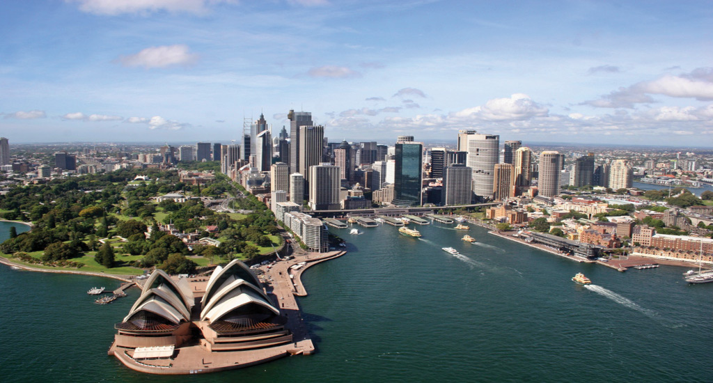
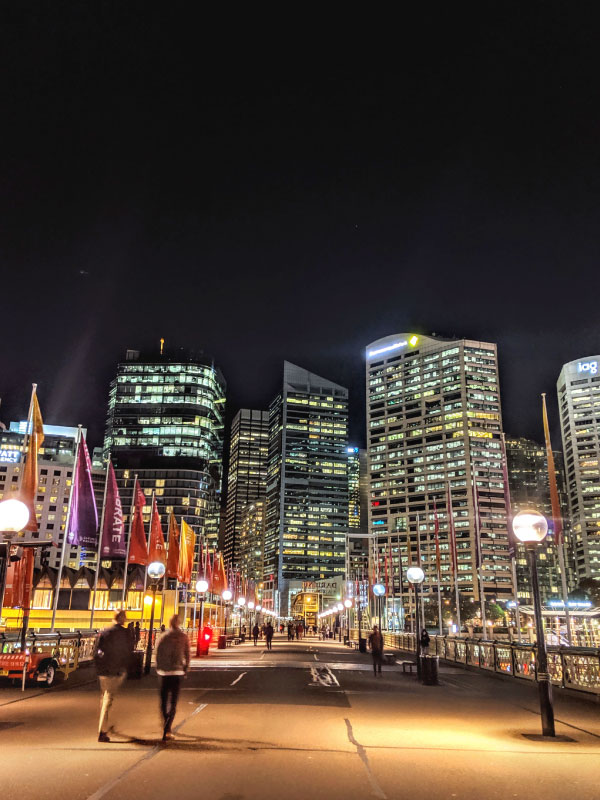
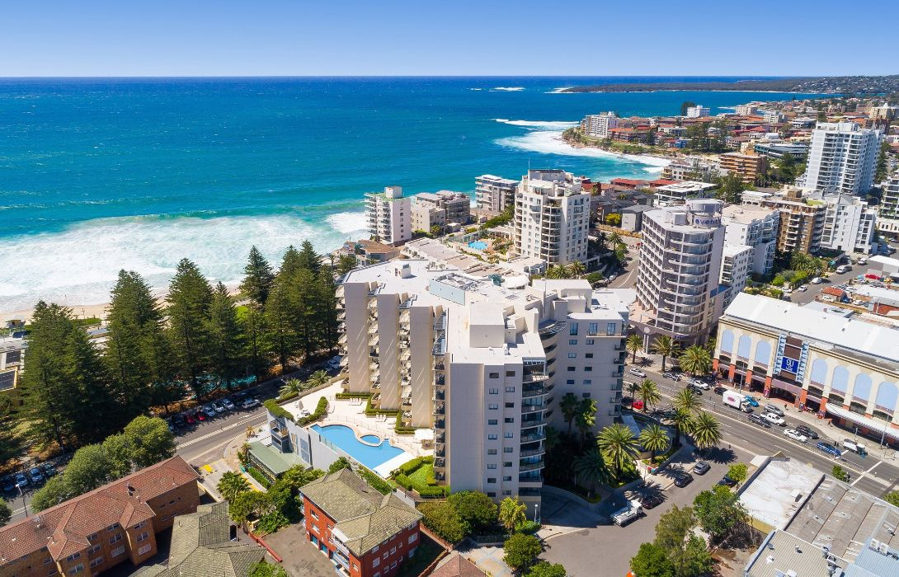
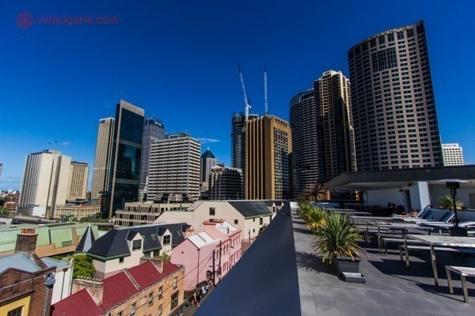
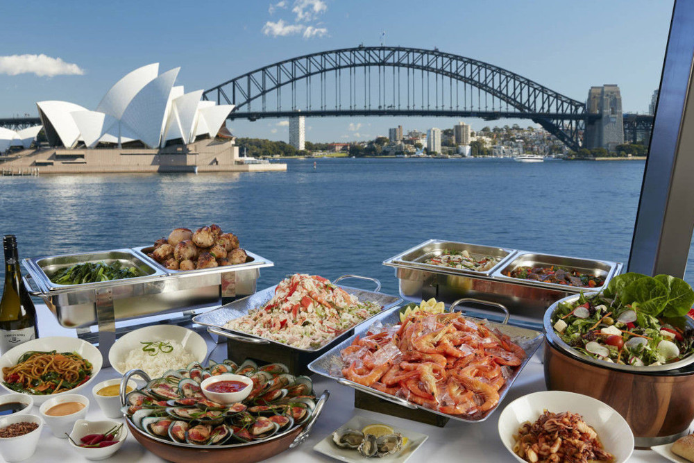
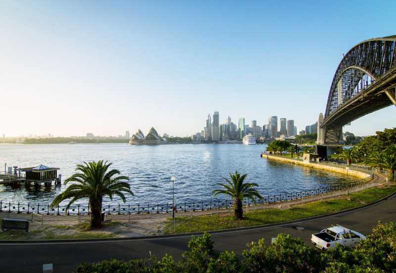
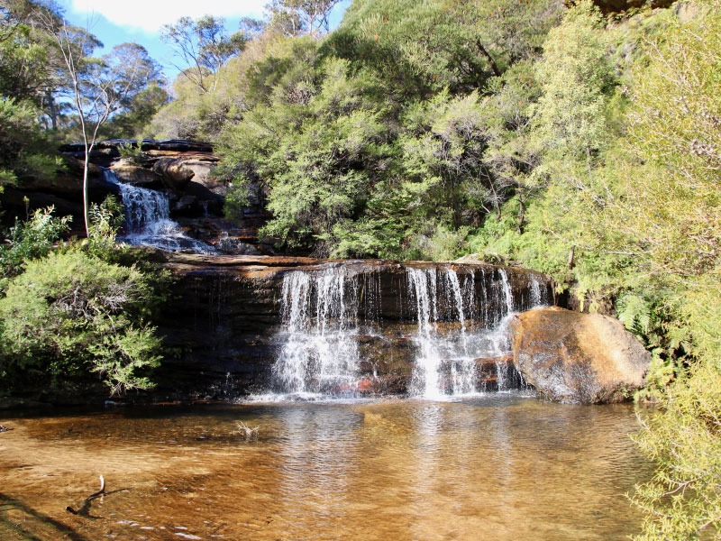

Cidades mais interessantes da Austrália
1-Sydney
Localizada na costa leste da Austrália, Sydney é maior e mais conhecida cidade do país. Com um clima ameno, esse destino é super conhecido por suas praias, vida noturna agitada e excelente qualidade de vida.
Além disso, Sydney é uma cidade multicultural, com o povo super receptivo. Essas são características ideias de destino para quem está pensando em fazer um intercâmbio, principalmente se você gosta de verão e praia.
QUALIDADE DE VIDA
A qualidade de vida em Sydney é considerada uma das melhores do mundo. A cidade é super moderna e conta com um transporte público de qualidade.
E com certeza um dos principais destaques de Sydney é a segurança. As ruas da cidade são bem iluminadas, e você se sentirá seguro para caminhar à noite. Isso é comprovado pelos próprios australianos, 68% da população da Austrália se sente segura para caminhar à noite, enquanto a média global é de 62,8%
CLIMA
Por ficar localizada pertinho do mar, Sydney possui um clima muito ameno. No inverno, as temperaturas raramente ficam abaixo dos 7ºC e o verão possui temperaturas entre 18ºC e 25ºC.
Os moradores da cidade simplesmente amam dias ensolarados, por isso, eles estão sempre bem atentos à previsão do tempo. Afinal de contas, nada mais lifestyle aussie do que ir à praia antes ou depois do trabalho, né?
Então, se você ama verão, sol e calor (porém nem tanto calor), Sydney é a cidade ideal para você. São mais de 340 dias de sol por ano!
CUSTO DE VIDA
Falando com sinceridade, o custo de vida da Austrália comparado ao do Brasil é realmente mais alto. No entanto, fazer esse tipo de comparação não faz muito sentido, pois as situações são diferentes.
Por exemplo, o salário mínimo de Sydney é um dos mais altos da Austrália, fazendo as contas, o “custo alto” de vida é compensado com um salário mínimo maior. Com isso, a qualidade de vida da cidade aumenta muito. Por exemplo, é possível trabalhar meio período em empregos como cleaner, auxiliar de cozinha, auxiliar de obras ou garçom e ter uma qualidade de vida muito boa.
Além disso, o custo de vida na Austrália sai bem mais em conta do que em outras cidades pelo mundo.
MULTICULTURALIDADE
Sabia que mais de 70% da população de Sydney é composta por filhos ou netos de imigrantes? Com tanta diversidade, não é uma surpresa que a cidade tenha uma cena cultural muito rica.
Essa multiculturalidade tem grande expressão tanto na arte, em exposições de museus e festivais locais, quanto na comida! Em Sydney, você vai encontrar comidas típicas de vários países, mas a cidade tem um carinho especial pela culinária asiática. Por isso, não deixe de experimentar as “comidas típicas” de Sydney.
MUITAS ATRAÇÕES
Você terá a oportunidade de visitar muitas atrações diferentes em Sydney. Começando pelos principais, o Opera House a Harbour Bridge, sem contar suas belíssimas praias de areia branca como Bondi Beach, a mais famosa entre elas.
Além disso, os arredores da cidade também possuem várias atrações de tirar o fôlego. Uma delas é o complexo Blue Montains, onde você pode acampar, andar de caiaque, escalar ou praticar qualquer atividade ao ar livre que você quiser.
